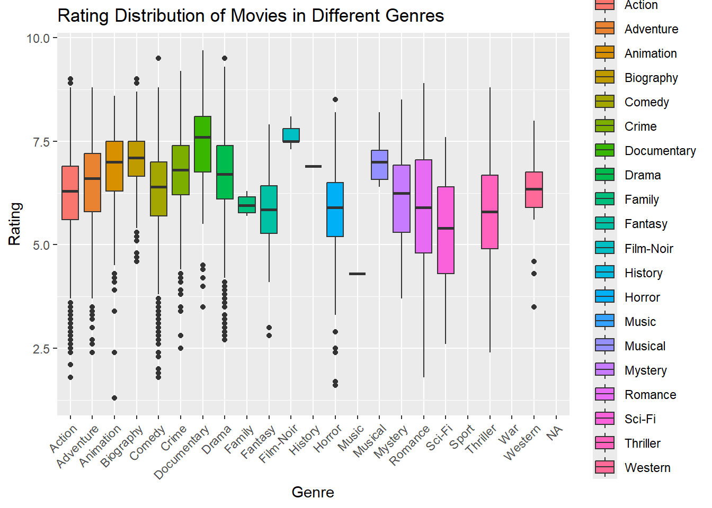
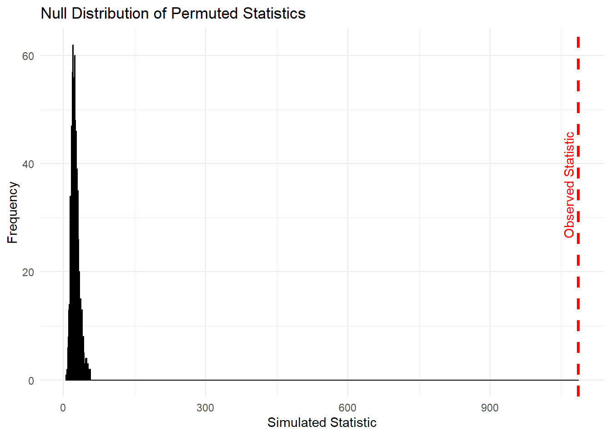

library(tidyverse)Movie Genre and IMDb Ratings
Investigation into whether or not a movie’s genre is associated with its IMDb rating
Introduction
Movie ratings are widely used to evaluate films. People often claim that some genres are “better” than others based on audience scores. However, this perception might just stem from random variation. Understanding whether genre truly influences ratings could help studios and critics separate taste patterns from statistical noise. By examining a dataset of movies and their ratings, we can statistically test whether genre is associated with IMDb ratings in a broader population sense. We will try to see if the observed differences in the ratings across genres of a sample are likely to occur by chance. A permutation test is perfect for this because it will simply test whether the association between genre and rating is stronger than we would expect if genres had no effect.
Import and Wrangle Data
The following dataset contains information on the genre and rating of 10,000 different movies in the IMDb database. We are specifically interested in these variables because we want to observe the relationship between them.
# Read data
imdb <- read_csv(
"data/imdb-movies-dataset.csv"
) |>
# Extract a primary genre to reduce sparsity
mutate(Genre2 = str_extract(Genre, "^[A-z-]+")) |>
# Keep only the variables needed for this analysis
select(Title, Genre2, Rating) Visualizing Ratings by Genre
The following plot shows the differences in the distributions of different genre’s movie ratings based on this data. You can see how some genres have higher median ratings than others and vice versa.
ggplot(imdb, aes(x = Genre2, y = Rating, fill = Genre2)) +
geom_boxplot() +
labs(title = "Rating Distribution of Movies in Different Genres", x = "Genre", fill = "Genre") +
theme(axis.text.x = element_text(angle = 45, hjust = 1))
Hypotheses
H₀ (null): The model that generates movie ratings is the same for all genres (genre has no effect). Any observed differences across genres are due to chance.
Hₐ (alternative): The model that generates ratings differs by genre; therefore, some genres have systematically different mean ratings in the population.
Test Statistic
We use an ANOVA-style test statistic that weights squared deviations of each genre mean from the overall mean by genre sample size:
\[ T = \sum_i n_i (\bar{x}_i - \bar{x})^2 \]
where \(n_i\) is the number of movies in genre \(i\), \(\bar{x}_i\) the genre mean, and \(\bar{x}\) the overall mean. A larger \(T\) indicates larger between-genre differences relative to the overall mean.
imdb |> summarize(avg_rating = mean(Rating, na.rm = TRUE))# A tibble: 1 × 1
avg_rating
<dbl>
1 6.44mean_rating <- 6.43861
imdb |>
group_by(Genre2) |>
summarize(ni = n(), xi = mean(Rating, na.rm = TRUE)) |>
summarize(stat = sum(ni * (xi - mean_rating)^2, na.rm = TRUE))# A tibble: 1 × 1
stat
<dbl>
1 1086.obs_stat <- 1085.533Permutation Test
Now we need a function that can simulate/permute this calculation while assuming genres are randomly assigned to movies(the null hypothesis(Ho)). In other words, each simulation randomly reassigns genres to movies to break any real association between genre and rating.
imdb_sim <- function(x) {
sim_value <- imdb |>
mutate(Genre2 = sample(Genre2, n(), replace = FALSE)) |>
group_by(Genre2) |>
summarize(ni = n(), xi = mean(Rating, na.rm = TRUE)) |>
summarize(stat = sum(ni * (xi - mean_rating)^2, na.rm = TRUE)) |>
pull(stat)
return(sim_value)
}Then we can use mapping to run this simulation/permutation many times so that we can be more confident in the results.
set.seed(47)
null_stats <- map_dbl(c(1:1000), ~imdb_sim(.x))
null_df <- data.frame(stat = null_stats)Null Distribution vs Observed Statistic
The following plot shows the distribution of the one-thousand simulated/permuted values as well as a vertical line at the observed statistic.
ggplot(null_df, aes(x = stat)) +
geom_histogram(binwidth = 1, color = "black") +
geom_vline(xintercept = obs_stat, color = "red", linetype = "dashed", size = 1.2) +
annotate("text", x = obs_stat, y = 50, label = "Observed Statistic",
color = "red", angle = 90, vjust = -0.5, hjust = 1.2) +
labs(
title = "Null Distribution of Permuted Statistics",
x = "Simulated Statistic",
y = "Frequency"
) +
theme_minimal()
Conclusion
As you can see, not a single one of the thousand permuted statistics even came close to being at least as extreme as the observed statistic, meaning the p-value for this test is 0. This means that we have very strong evidence supporting the alternative hypthesis(Ha) that movie ratings differ by genre and that some genres consistently receive higher or lower ratings. This conclusion is about the population model (i.e., whether genre is associated with ratings in general) because the permutation test simulates the null model of no genre effect and compares the observed statistic to that null.
References
Barthwal, Aman. IMDb Movies Data. Kaggle, 2024.
https://www.kaggle.com/datasets/amanbarthwal/imdb-movies-data